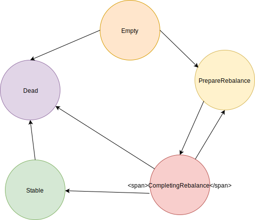

前言
上篇文章讲述了 Rebalance 在客户端的实现，这篇文章就来讲讲它在服务端是如何实现的。服务端由GroupCoordinator负责处理请求，包含寻找请求，加入请求，心跳请求等。
元数据
我们先来看看服务端维护了哪些数据。GroupCoordinator 为每个 consumer group 保存元数据，包含了组里每个的成员和分配结果，还有 leader 的信息。
GroupMetadata描述了一个consumer group的信息，它主要包含以下字段：
| 字段名 | 字段类型 | 字段含义 |
|---|---|---|
| generationId | 整数 | 版本号 |
| members | MemberMetadata 列表 | 组成员的元数据列表 |
| leaderId | 整数 | leader角色的成员 id |
MemberMetadata描述一个成员的信息，它主要包含以下字段：
| 字段名 | 字段类型 | 字段含义 |
|---|---|---|
| memberId | 字符串 | 成员 id |
| groupId | 字符串 | 组名称 |
| rebalanceTimeoutMs | 整数 | 等待rebalance的最大时间 |
| sessionTimeoutMs | 整数 | 心跳超时的最大时间 |
| supportedProtocols | 列表 | 该consumer支持的分配算法列表 |
| assignment | 字节数组 | 分配结果 |
状态机
GroupMetadata 本身也是一个状态机，如下图所示：
GroupMetadata 开始时的状态为 Empty，此时还没有一个成员。
当有新的 consumer 申请加入到该组中，GroupMetadata 会将其信息保存起来，并且状态变为PrepareRebalance。
kafka 会将第一个 consumer 任命为 leader，并且会等待一段时间，期待有新的 consumer 加入进来。当超过此段时间后，状态会变为CompletingRebalance。
当处于CompletingRebalance状态时候，此时恰好又有新的 consumer 加入进来，那么会重新进入到PrepareRebalance中。
kafka 服务端会将组成员的信息发送给 leader，然后leader进行分区分配，将结果发送给服务端。服务端在接受到了分配结果，状态变为Stable。
当组内没有活动consumer时，可以被删除掉，此时状态就会变为Dead。
处理寻找 GroupCoordinator 地址请求
每个topic 的GroupCoordinator 对应的节点是不相同的，这和_consumer_offsets topic 有关系。这个 topic 是存储consumer group的消费位置，它的分区时按照 consumer group 名称来分的。一个 consumer group 订阅的所有 topic 的消费位置，只存在 一个分区里。而这个分区的 leader 副本所在的主机，就是负责该consumer group的 GroupCoordinator 的地址。
处理加入请求
处理请求
对于加入请求的处理，针对不同的状态采取不同的操作。
Dead状态，返回错误响应PreparingRebalance状态，则会更新元数据CompletingRebalance状态，如果是之前存在的consumer，那么直接返回响应。如果不存在，则会更新元数据并且重新平衡Empty或Stable状态，如果是新成员，那么会添加到元数据，并且重新平衡。如果是旧有成员，并且不是leader，分配的方式也没变化，那么会直接返回响应。否则需要更新元数据，并且重新平衡。
延迟响应
当 GroupCoordinator 收到加入请求后，并不会立刻返回响应，而是延迟一段时间，尽可能的等待更多的consumer申请加入，这样就可以大大避免了，连续的consumer加入请求引起的多次重平衡。
当第一个 consumer 加入后，会触发单次延迟的时间由group.initial.rebalance.delay.ms配置项指定，默认为3秒。如果延迟期间有新的consumer也加入了，那么就会触发新的延迟。不过总的延迟时间是有限制的，这个值是该组成员中最大的 reblance timeout，由各自的max.poll.interval.ms指定，默认为 5 分钟。
如果 kafka 发现旧有的成员已经都重新加入了，那么会认为此次 rebalance 提前完成。
处理获取分配结果请求
在延迟超时后，GroupCoordinator 会向 consumer 发送响应，响应中包含了各自的 id 和 是 leader 的 id。如果consumer 为 选中的 leader，那么响应还会携带该组的所有成员信息。leader 角色会执行分区分配算法，然后将分配结果发送 GroupCoordinator。如果是 follower 角色，只是简单的向GroupCoordinator请求分配结果。
当收到 leader 的分配结果后，GroupCoordinator 的状态会变为Stable。并且它会同时通知其它成员。
处理心跳请求
group的每个成员需要实时与GroupCoordinator保持心跳，这样GroupCoordinator才知道这个成员是正常运行的。GroupCoordinator 接收到成员的心跳请求后，会为它生成一个心跳超时的延迟任务。如果任务在超时之前，接收到心跳请求，就会更新最后一次的心跳时间，并且生成新的心跳延迟任务。如果超时了，还没收到心跳请求，GroupCoordinator 会将此成员从组里删除掉。这个超时时间由 consumer 的session.timeout.ms指定，默认为10秒。
处理心跳请求的程序，主要是由completeAndScheduleNextHeartbeatExpiration方法负责
|
|
当心跳超时，GroupCoordinator会删除该 consumer，然后触发 rebalance 过程。
离开请求
当消费组离开消费组时，GroupCoordinator会删除该 consumer， 会进入 PrepareRebalance 状态，触发rebalance 过程。
Rebalance 通知
消费者只能通过定时发心跳送请，从返回的响应中，知道此次发生了 rebalance。此时消费者则需要主动重新发起加入请求。